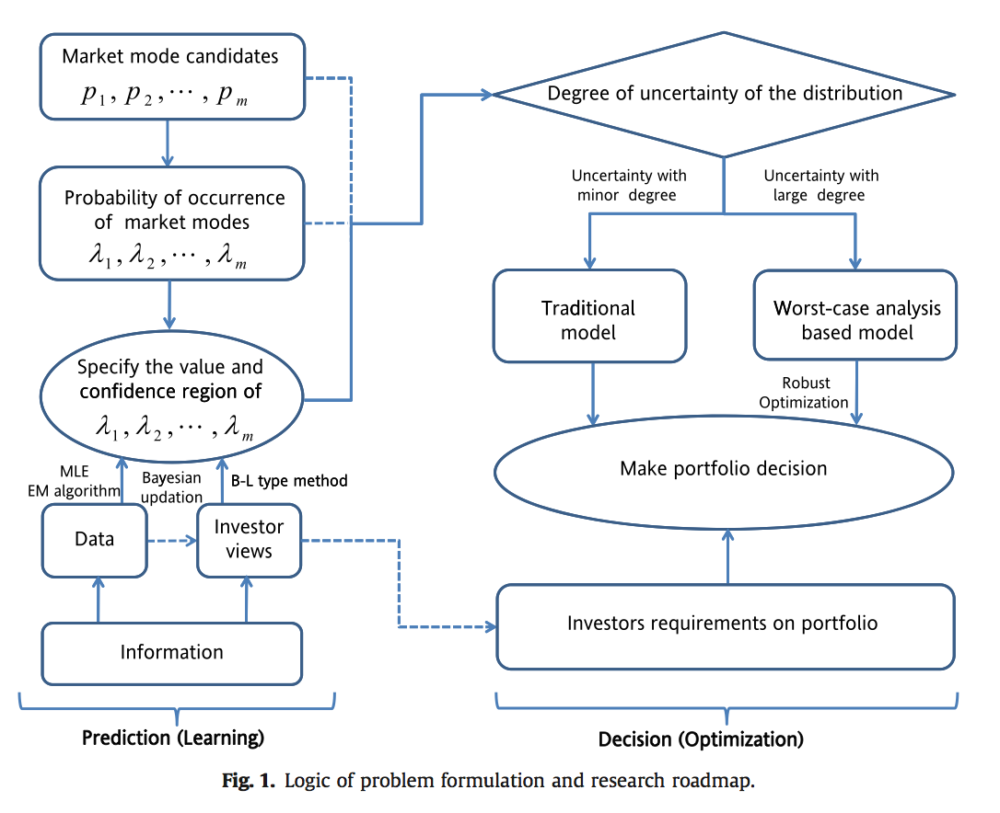
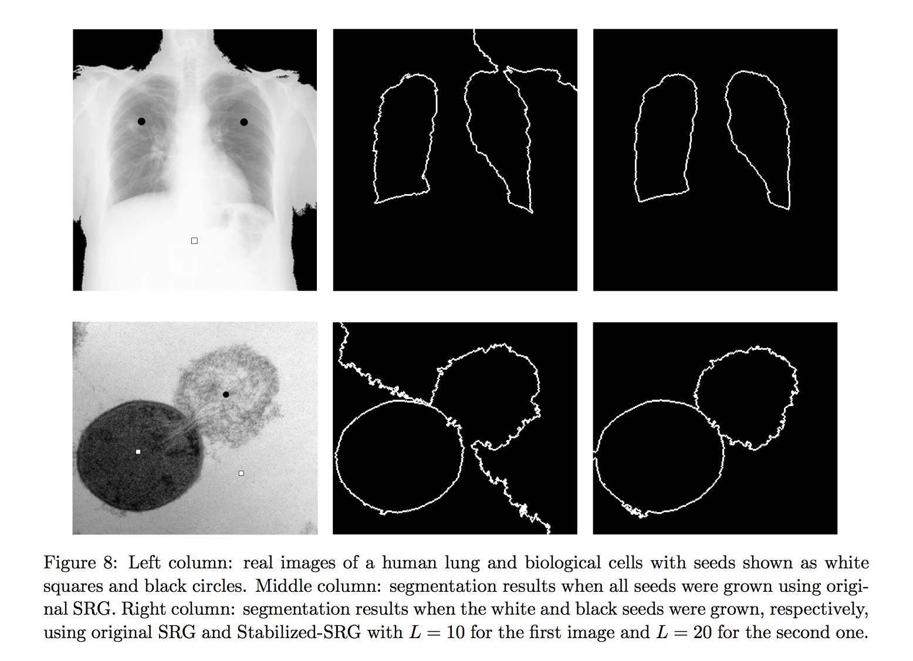
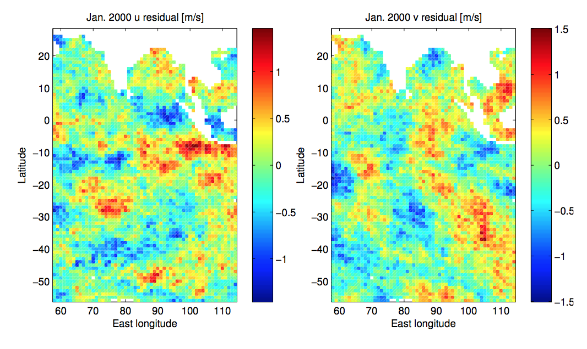

Presentations
- Separating image structures via graph-based seeded region growing
[pdf]
Topics in Astrostatistics at Harvard
Nov. 2014 - Cross-covariance functions for tangent vector fields on the sphere
[pdf]
Joint 24th ICSA Applied Statistics Symposium and 13th Graybill Conference
June 2015
Publications: published
|
 | |
|
 |
Publications: submitted
|  |
Packages
Workshops
- Big Data Era: Statistical Theory and Methodology
Shanghai University of Finance and Economics
July 2013 - Second Annual Graduate Workshop on Environmental Data Analytics
National Center for Atmospheric Research in Boulder, CO
July 2015